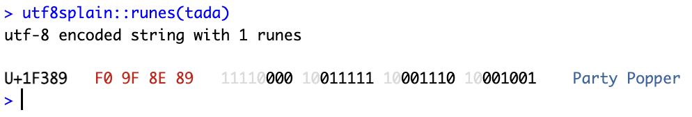
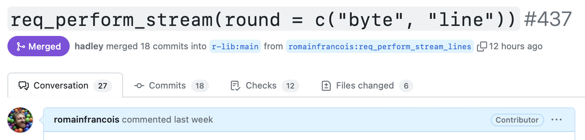
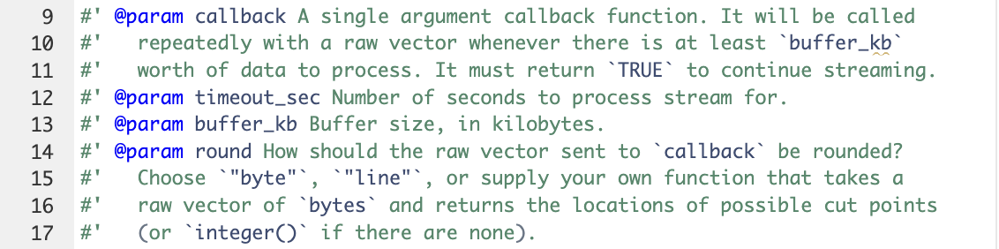

(tada <- emo::ji("tada"))🎉  httr2 is an amazing 📦 from the
httr2 is an amazing 📦 from the r-lib team. Built on top of the strong foundations of curl, experience from the previous incarnation with httr and tidy principles and design, httr2 is an easy goto for anything api related.
But … I found a bug 🪲, or let’s call it a missed opportunity 🤓. TL;DR it was fixed. Let’s rewind.
🎉 aka :tada: is the best emoji, this is not open for debate 😂.
(tada <- emo::ji("tada"))🎉 Let’s dissect it with the help of 📦 utf8splain and uni I totally forgot about. tada is a single code point emoji U+1F389 aka "\U1F389" in R:
cat("\U1F389")🎉dplyr::filter(uni::code, rune == "U+1F389")# A tibble: 1 × 7
id rune description block countries languages type
<int> <chr> <chr> <chr> <chr> <chr> <chr>
1 127881 U+1F389 " Party Popper" miscellaneous-symbol… <NA> <NA> <NA> In utf-8, i.e. the encoding to rule them all, 🎉 is encoded with 4 bytes that follow the convention explained in the UTF-8 wikipedia page. 11110000 : starts with 11110 to indicate it is a 4 bytes encoded code point (or rune 🀄️), followed by 3 continuation bytes that start with 10 : 10011111, 10001110, 10001001.
(I still don’t know how to reveal the ansi escape codes in quarto, so using a screenshot instead so that you have colors 🌈).

Just like 🎉, many characters are encoded using more than on byte in utf-8 and other encodings.
While we’re in ThinkR realm (uni and utf8splain) are weekend 📦 we developed when I was working with them 💜, let’s look at what started this side quest of fixing a 🐞 in httr2. In the tada::verse() post I introduced a function to compose 📦 poems with ChatGPT via the mlverse/chattr package, and was annoyed that the function would not work to write a golem poem.
> chattr::chattr("Can you write a poem about the R package called 'golem'. Please add a bunch of emojis.")
Sure! Here's a poem about the R package 'golem' with a bunch of emojis:
Error in `discard()`:
ℹ In index: 1.
Caused by error:
! `.p()` must return a single `TRUE` or `FALSE`, not `NA`.
Run `rlang::last_trace()` to see where the error occurred.
Warning messages:
1: In strsplit(., "data: ") :
unable to translate 'data: {"id":"chatcmpl-8nsIIxlfPHfY8BhhuUu7NFsIO57AC","object":"chat.completion.chunk","created":1706897470,"model":"gpt-3.5-turbo-0613","system_fingerprint":null,"choices":[{"index":0,"delta":{"role":"assistant","content":""},"logprobs":null,"finish_re...' to a wide string
2: In strsplit(., "data: ") : input string 1 is invalidThat was embarrassing and curbed my enthusiasm about sharing the poem with the team. I still did, but I had to use the normal ChatGPT app like a human instead of the api 😥.
mlerse/chattr is not the only R 📦 that can speak to ChatGPT and I successfully used irudnyts/openai for another similar quest with the valentine package that writes roses are red … poems about packages. This does work, e.g.
valentine::roses("golem")Roses are red, 🌹
Golem is neat, 💫
With R package power, 💪
Coding dreams complete! ✨The advantage of mlverse/chattr though is that is uses streaming to get tokens faster rather than wait for the whole poem to be composed.
So naturally, I went for a dive on how mlverse/chattr works, using snitch to get some understanding of its implementation, and sending a bottle in the issues in case the chattr team wanted to spare my quest.
I sent a first clunky pull request that did the job, while looking kind of ugly and hacky. When that happens, that’s usually a good sign that this is a solution to the wrong problem, so I abandonned that PR and decided to go earlier in the 📦 chain and look at r-lib/httr2 because chattr uses httr2::req_perform_stream() to … process the stream.
The stream from ChatGPT is processed by fixed-size chunks of bytes, and so the problem was that on occasions, these chunks cut an emoji in the middle, which causes issues down the line:
tad <- charToRaw(tada)[1:3]
tad[1] f0 9f 8erawToChar(tad)[1] "\xf0\x9f\x8e"nchar(tad)[1] 2 2 2This confused other parts of the mlverse/chattr codebase.
Now that this was reframed as a missed r-lib/httr2 opportunity, and I had been looking for an excuse to peep on how httr2 works, I deep dived and opened a pull request last week. Hadley started to review it the next day and we 🏓 on it and iterated a few times until we were happy about it.

It is now merged, and so will be released as part of the next httr2 release, but you can take it for a spin with pak::pak("r-lib/httr2").
My initial proposal was to add a req_perform_stream_lines(), based on the idea that if we know the stream is text encoded in utf-8, instead of streaming all the bytes, and taking the risk that chunks might cut emojis or other character mid rune, we can buffer the bytes and process line by line.
This kind of worked, but we ended up having the two sister functions req_perform_stream() and req_perform_stream_lines() that shared a lot of logic but were different. Something was off.
We continued to iterate, and Hadley has been as usual generous with reviewing and improving the pull request. Hadley even contributed the tests that allowed us to 🏃♂️ the last kilometer 💚.
We settled on adding the extra argument round= to the req_perform_stream() function, so that instead of processing fixed-size chunks of bytes, the callback function could receive a truncated sequence of bytes.
Here is the updated documentation for req_perform_stream() :

The default behavior remains round = "byte" so that the risk of the pull request being dispruptive is minimal, so by default the full chunk of buffer_kb kilobytes is sent to the callback.
The added value of the pull request though is that you can now round = "line" so that the stream is buffered and cut at the last newline character, a new line is a character that is encoded in a single byte, i.e. its utf-8 representation is the same as its ascii 00001010 .
utf8splain::runes("\n")utf-8 encoded string with 1 runes
U+000A 0A 00001010 New Line (Nl) : line feed (lf) : end of line (eol) : LFutf8splain::bytes("\n")# A tibble: 1 × 4
id byte decimal binary
<int> <raw> <int> <chr>
1 1 0a 10 00001010We also contemplated on implementing round = "utf8" to round at the last valid utf-8 sequence, but we eventually arbitrated that it’s probably not worth it at this stage.
But round = is flexible enough to accomodate for other ways of rounding, and is passed through the internal httr2::as_round_function() :
as_round_function <- function(round = c("byte", "line"),
error_call = caller_env()) {
if (is.function(round)) {
check_function2(round, args = "bytes")
round
} else if (is.character(round)) {
round <- arg_match(round, error_call = error_call)
switch(round,
byte = function(bytes) length(bytes),
line = function(bytes) which(bytes == charToRaw("\n"))
)
} else {
cli::cli_abort(
'{.arg round} must be "byte", "line" or a function.',
call = error_call
)
}
}I’ll talk about cli_abort(), arg_match() and error_call some other day. Working on this pull request was great and I believe we end up with the right solution.
With req_perform_stream(round = "line") it becomes much easier to fix the initial problem, so I could send a second pull request there, and now with the dev version of httr2 and the pull request of chattr we can finally enjoy the golem poem:
# pak::pak("mlverse/chattr#65")
chattr::chattr_use("gpt35")── chattr • Provider: Open AI - Chat Completions• Path/URL: https://api.openai.com/v1/chat/completions• Model: gpt-3.5-turbotada::verse("golem")Sure! Here's a poem about the R package 'golem' with a bunch of emojis:
🌟 In the land of R, a package was born,
🔧 Its name was 'golem', a tool to adorn.
🏗️ With 🧱 and 🏗️, it built apps with ease,
🌈 Adding colors and interactivity, oh please!
📦 'Golem' wrapped up shiny, like a gift,
🎁 Making web apps with a magical lift.
🌐 It brought the power of the web to R,
🖥️ Creating interfaces that would take you far.
🔮 With 'golem', your app could be grand,
🎨 Customizing the UI with a wave of your hand.
📊 Visualizations, charts, and graphs,
📝 All made possible with 'golem's' crafts.
🔒 Security was 'golem's' top priority,
🔐 Protecting your app with utmost sincerity.
🔁 Continuous integration, deployment made smooth,
🚀 Launching your app with a confident groove.
🌟 So, if you seek to build apps with flair,
🔧 'Golem' is the package that's beyond compare.
🏗️ With its help, your dreams will come true,
🌈 Creating web apps that will surely woo!